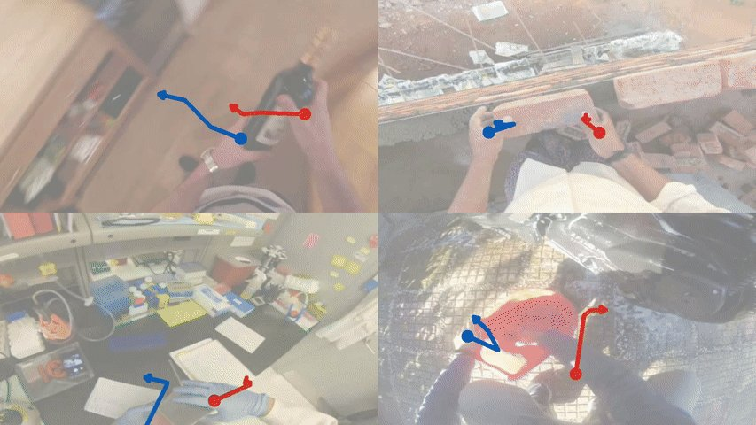
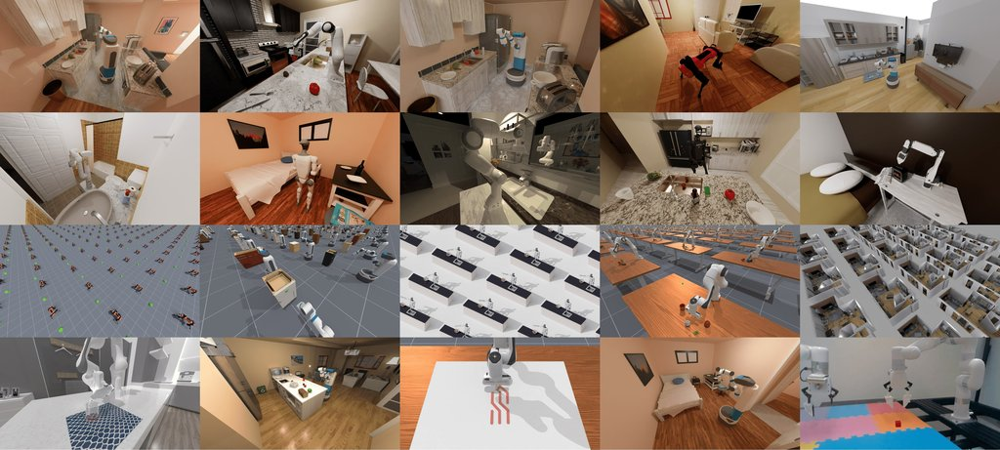
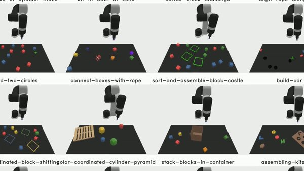
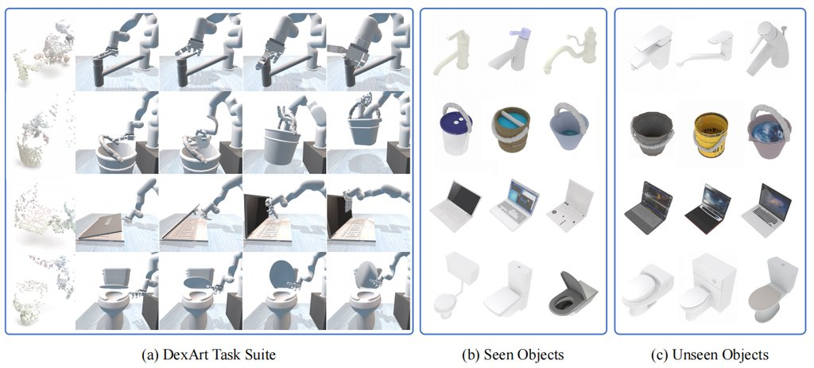
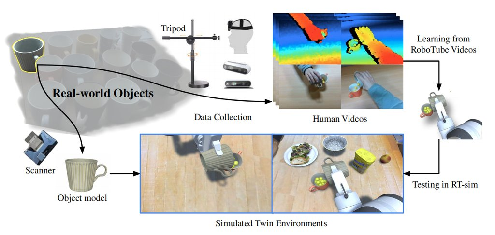
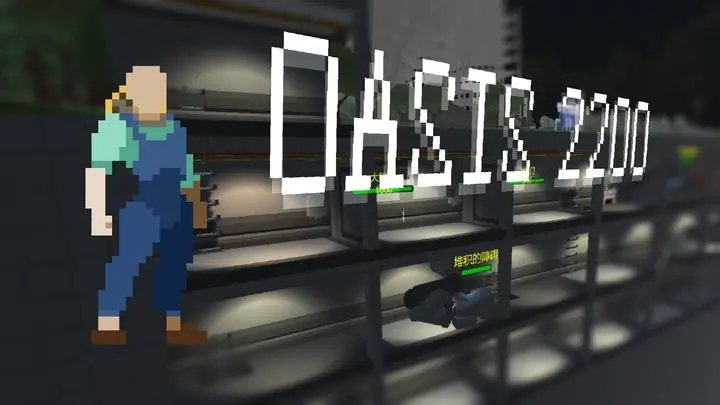

HandsOnVLM: Vision-Language Models for Hand-Object Interaction Prediction
Transactions on Machine Learning Research, TMLR 2025
I am a Researcher at Meta Superintelligence Labs, working on frontier robotics models. Previously, I was a founding researcher at Assured Robot Intelligence (ARI), which was acquired by Meta in May 2026.
I received my Master's degree from the Robotics Institute at Carnegie Mellon University, where I worked with Prof. Abhinav Gupta and Prof. Xiaolong Wang. After graduating, I worked at Skild AI with Prof. Deepak Pathak. Prior to CMU, I conducted research at Shanghai Jiao Tong University with Prof. Cewu Lu.
My research focuses on scalable learning for humanoid robots. I received offers from Princeton University and University of Illinois at Urbana-Champaign for Fall 2025 PhD programs, but decided to pursue opportunities in industry.

Transactions on Machine Learning Research, TMLR 2025

Robotics: Science and Systems, RSS 2025
ICLR 2025 Workshop on Robot Learning (Oral)

International Conference on Learning Representations (Spotlight), ICLR 2024
CoRL 2023 Workshop on Language Grounding and Robot Learning (Best Paper)

Computer Vision and Pattern Recognition Conference, CVPR 2023

Conference on Robot Learning (Oral), CoRL 2022

Course Project of SE128 @ SJTU, 2021